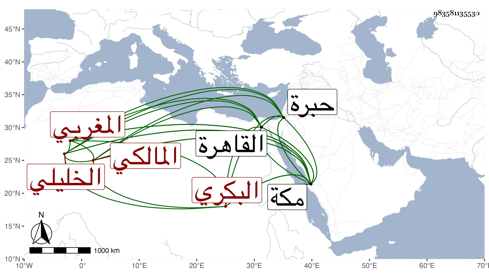

0902Sakhawi.DawLamic.ITO20230111-ara1.EIS1600.983581135530
Biography ID: 983581135530
214
محمد بن محمد بن حسين بن علي بن محمد بن يعقوب بن يوسف بن عبد العزيز الشمس أبو عبد الله بن حميد الدين أبي حامد البكري المغربي الأصل الخليلي المولد والمنشأ المالكي إمامها ونزيل مكة ويعرف بابن أبي حامد . ولد في رجب سنة أربع وستين وثمانمائة بالخليل ونشأ بها فحفظ القرآن والشاطبية والرسالة المالكية والورقات والجرومية والألفية وغيرها ، وأخذ عن البرهان بن قوقب النحو وسمع عليه الموطأ وغيره وكذا قرأ النحو مع بعض الشاطبية على العلاء ابن قاسم البطائحي وحضر عند الكمال بن أبي شريف في التفسير والنحو وغيرهما في آخرين ودخل القاهرة في سنة ست وثمانين فحضر عند السنهوري في الفقه وغيره وكذا قرأ على العلم سليمان البحيري الأزهري وسمع مني المسلسل وغيره في سنة اثنتين وتسعين ثم لقيني بمكة في سنة ست وتسعين وكان مجاورا بها فقرأ علي في التي تليها مناقب الشافعي لشيخنا من نسخة كتبها بخطه وكان قرأها وغيرها على القطب الخيضري بالقاهرة في سنة ثلاث وتسعين وأقرأ بمكة ابن محتسبها سنقر ثم انجمع عنه وتكسب بالكتابة وولد له ، وهو خير فاضل منجمع على نفسه بحيث كتب نسختين من شرحي للألفية وشرح ابن ماجه للدميري وغير ذلك .
